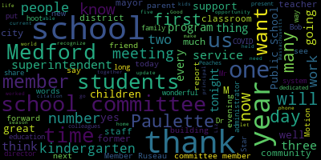

[Unidentified]: you I'm going to turn it back over to you, so we're going to play another level.
[SPEAKER_10]: And the second day of the program will be presented by the High School String Ensemble.
[Edouard-Vincent]: And we'd like to take this opportunity to express our gratitude for Mrs. Benjamin, who has been very supportive of the string program of this past 13 years. So, thank you.
[Unidentified]: Thank you.
[SPEAKER_10]: I'm pretty sure you guys have heard of it. It's called We Don't Need One Mr. Church.
[Unidentified]: Yeah. Our next piece is going to be, I guess, another concert with the Wonderland. When someone joins us, we will pay the bill in the mall. This piece will be the supper list. Do you want to show it? in front of a whole new chair for you this evening. I know. Yes. We're going to set up now. Thank you very much. I'm so freaking hot. They're digging deep into the well of the old time. She's commencing the meeting, so let's say bye. Good evening, everybody.
[Edouard-Vincent]: We'll try to get the business done quickly. We have somebody to celebrate. We see a lot of new and old faces in the audience. So we'll get through a few agenda items and then we'll celebrate with Member Paula Van De Kroot.
[Graham]: So today is the eighth regular meeting of the Medford School Committee, Monday, December 20th, 2021, 6.30, to be held here at the Alden Memorial Chambers, Medford City Hall.
[Edouard-Vincent]: We were just blessed to hear the Medford High School Orchestra perform a selection of holiday favorites, and we thank them for being here, that was fabulous. We're gonna start by calling the roll, Member McLaughlin, please. Member Graham. here, here, here, here, here, here, here, here, here, here, here, here, here, here, here, here, here, here, here, here, here, here, here, here, here, here, here, here, here, here, here, here, here, here, here, here, here, here, here, here, here, here, here, here, here, here, here, here, here, here, here, here, here, here, here, here, here, here, here, here, here, here, here, here, here, here, here, here, here, here, here, here, here, here, here, here, here, here, here, here, here, here, here, here, here, here, here, here, here, here, here, here, here, here, here, here, here, here, here, here, here, here, here, here, here, here, here, here, here, here, here, here,
[Unidentified]: Do we have our student representatives on the call? I don't believe so.
[Edouard-Vincent]: We'll move on to item three, consent agenda, approval of bills and payrolls, and approval of the regular school committee meeting minutes from 12-6-2021. Motion to approve. Second. Motion to approve by Member Rothland, seconded by Member Ruseau. All those in favor?
[Unidentified]: Aye.
[Edouard-Vincent]: All those opposed?
[Kreatz]: Consent agenda is approved. Number four, reports of subcommittees, special education subcommittee meeting minutes 12, 16, 2021. Member McLaughlin, motion to table.
[Edouard-Vincent]: Motion to table by Member McLaughlin, seconded by Member Ruseau. All those in favor? Aye. Aye. All those opposed? Minutes are tabled. Number five, we have report of the superintendent. First up, superintendent's updates and comments. Dr. Maurice Edward-Vincent. Good evening, everyone. First, I just want to officially thank our wonderful Strings Orchestra that performed today. Ms. Sophia Ching, Ms. Emma Baptist, Ms. Haley Reller was here today. The students did a fabulous job and it just filled this room with just beautiful music and really set a positive tone for today for us to celebrate and her 32 years of service. So I just want to thank them all for a wonderful job today. So I have a few remarks, updates and comments on what's happening in the district. So it's with happy news that Nurse Avery, our Director of Health Services got married this weekend. And so we're very happy for her, special congratulations to Nurse Avery Hines. And today we'll be having a COVID-19 update will be done separately from my comments today by our Assistant Superintendent of Finance and Operations, Mr. Dave Murphy. As I did mention to everyone last week that the winter sports season began, but I want to mention our fall athletes and recognize them who were selected as GBL All-Stars. So from boys cross country, we want to recognize Sam Orcutt and Chris Hart. From girls cross-country, we want to recognize co-MVP all-stars Anna Casey and Yasmin D'Souza-Vieira, and an all-star Rikita BK. boys and girls cross-country coaches of the year. Lou Ruggiero and Tom Lynch, we want to recognize them. For football, it was Alvin McGross and Isaiah Blake. For golf, it was Anthony Lind. For volleyball, Kate Jocelyn, Regina Prince, and Olivia Tuss. For boys soccer, we recognize MVP All-Star Raphael Gross, Jordan Irenkiev, Jack Medeiros, and Ryan D. Oliveira. Boys Soccer Coach of the Year, Mike Petrides. Boys Soccer, Eastern Mass All-Star, Rafael Gross. Girls Soccer, Emma Casey and Maria Colombo. Girls Soccer, Eastern Mass All-Stars, Maria Colombo, Emma Casey, and Haley Duarte. Congratulations to all these athletes and coaches, and to all of our fall athletes and coaches for a great season. Just a reminder that winter break begins this Thursday, December 23rd, with an early dismissal of noon. Schools will resume on Monday, January 3rd, 2022. Tomorrow, December 21st, is the winter solstice that marks the official beginning of astronomical winter. We often think of the winter solstice as an event that spans an entire calendar day, but the solstice actually lasts only a moment. Specifically, it's the exact moment when a hemisphere is tilted as far away from the sun as it can be. The winter solstice holds significance across a variety of cultures, as it signals the changing of the seasons. Some ancient peoples even mark the solstice using huge stone structures, like Newgrange in Ireland. Although the winter solstice means the start of winter, it also means the return of more sunlight. It only gets brighter from here. I also want to share that Kwanzaa begins on December 26th and runs through January 1st. It's a cultural and ethnic holiday and is an annual celebration of African-American culture, culminating in a communal feast called Karani, usually held on the sixth day. It was created 55 years ago by Malana Karanga and is based on African harvest festival traditions held in various parts of Africa. The theme of Kwanzaa 2021 is ensuring the well-being of the world, which encourages all of us to keep the faith, love, and respect of all people, seek and speak truths, proceed with justice, and leave a legacy worthy of our name in history. Happy Kwanzaa. Lastly, I wish all who celebrate Christmas to do so joyfully and safely. In the spirit of the season, so many from our schools reached into their pockets and hearts and helped those who needed a little extra help and assistance from our Mustang community. In the words of the now famous holiday song, Jingle Bells, that was written here in Medford, it speaks about a one-horse open sleigh. I look at this community as that sleigh, filled with every walk of life, eagerly helping those in need, so that all families can enjoy and laugh all the way. through the holidays. At this blessed time of year, I wish all of our families a wonderful holiday season. Thank you.
[Kreatz]: Thank you, Dr. Edward-Vinson. Up next, we have a COVID-19 update. Mr. David Murphy, Assistant Superintendent of Finance and Operations. Just wait for Mr. McLaughlin to turn on your microphone. please.
[Murphy]: Thank you. as well as our testing program being done in partnership with Tufts University. As has been communicated in previous messages to the committee, we have seen an uptick in positivity within our testing program. It tracks consistent with the increase in uptick in positivity that we're seeing in the community and surrounding area. For that reason, The Health Services Department reaffirms and relates the message that we have been communicating consistently over the course of the past year plus, that both students and staff with symptoms are required to stay home. And so that's a message that we'll be delivering as we head into the winter break and then upon students' return. We will adjust the testing days coming back in January. So schools will test on Monday, Tuesday, and Wednesday, as they did this week as a result of the calendar and the short week. We'll stick with the early week testing in the first couple of weeks back from January in anticipation of an uptick similar to what we saw coming out of the Thanksgiving holiday. In this slide, and we'll just move forward, the participation rate in the testing program continues to be strong. I know that numbers are small, but when you see this, you can either zoom in or we can provide it in a bigger format. But we have had very strong participation with regard to consent forms. And as we've talked about in this forum before, our actual participation rates, which you can see more clearly on the next slide, That's a percentage of students who both have turned in consent forms to participate in the testing program and then who are actually participating. So we're hitting a rate of about 70% of students that are testing at least weekly. There is some slack as we've discussed that before, and this chart is meant to break down where that essentially is. So we have about 12% of our student population who have not yet volunteer to have families volunteer to participate in the testing program and we'll be continuing to push that messaging when we come back in the new year with the caveat that we'll also be emphasizing what we're going to talk about now as we move forward, that we will be holding additional vaccination clinics in partnership with the Board of Health. This is just in response to some questions that we've had from the committee and community members with regard to what is the extent to which students are currently being forced out of school to either isolate or quarantine. And you can see the asterisk there. Well, this is still sort of coming out of a post-Thanksgiving uptick in quarantine that you can see, particularly at the McGlynn Middle School, you can see a number that's particularly high in the Mississippi also. That number, though, of 39 students, that's the number as of today. That number will reduce to under 10 students in quarantine tomorrow, with the caveat that we tested that move in today, meaning it may just go back up, obviously. But that is all reflective of this uptick that we've seen and the need to continue our level of vigilance. And then just in that last slide, you can see, almost the last slide, I apologize, that's our vaccination rates. You can see in these numbers, I expect we'll be having a more detailed conversation at our first meeting in January, but we are generally encouraged by our vaccination rates amongst staff and amongst our high school population who, of course, have had a longer period of time to get vaccinated. That's in the 12 to 18 population primarily. Our five to 11-year-old population, the numbers are low. I would say that there is some as yet unidentified number of students who are not included in those five to 11-year-old numbers because they have not yet received their second shot. And so partially vaccinated would not be reflected in this table. So I expect that when we share the information in January, certainly by mid-January, you'll see an uptick. We're at over 90% at each of our school buildings, some considerably higher than that. We will be, as I said, pushing the vaccination clinics that we'll be running in coordination with the city's Board of Health in January. And it's our hope that, I can talk a little bit about that if you have questions, but our hope is that we'll see the needle move in a favorable direction from a vaccination perspective. So now on the final slide, I promise I know there's a lot to do tonight and this is probably not the highlight of the meeting event for anybody. Our vaccination clinics, we are planning vaccination clinics in conjunction with the Board of Health for every Wednesday and we hope to start on January 5th. So these will be for district staff and students. We will run the clinic most likely at Medford High School. It will start at least at first as an after school program. And we will be doing phone banking in addition to the clinics to try to encourage families to bring their students, particularly the five to 11 year old population where we know we have some gaps that we need to fill there. So we'll have a more formal announcement coming over the course of the coming days and probably the essential focal of our end of the calendar year messaging that you'll receive from the superintendent, but we'll be seeing a lot of work to complete our vaccination cycles. starting on January and running every Wednesday for the foreseeable future. With that, I'm happy to take your questions.
[Edouard-Vincent]: Mayor, Member Vendicott, I was asked to read this letter. Hello, this is from a citizen, Rebecca Gutwin, 47 Morrison Street, from the Roberts Elementary School as your parent. With rising COVID cases in our city and our schools, I am becoming increasingly concerned that all notices about COVID protocol and vaccination clinics are primarily being sent out via email and Facebook, further limiting access. The notices are only in English and with no translation available. All notices should be going home with students on paper and need to be translated. We aren't even trying to have effective outreach and it is clearly showing in our case rate numbers. Most recently, our amazing nurses at Roberts Elementary School sent out instructions on how to submit vaccine cards from our recently vaccinated students. The email was very informative, but was only in English. It should have been sent home in backpacks along with information about this weekend's vaccine clinic. Ideally, we would be contacting patient parents by email, phone and mail. We are all overwhelmed right now, but effective outreach is the key to lowering our case rates and workload. Mr. Murphy, could you please address this?
[Murphy]: Sure. The first thing I would say is that I think Whenever we're looking at communication issues, we have to be mindful that continuous improvement is our obligation and we want to improve our communication strategies in whatever way we can. I do think that some of the underlying facts in that particular message may not be completely accurate. We do provide translations to every communication that comes out from the central office and generally from the schools as well, but that's certainly something that we'll follow up on. and reiterate to each of our school communities that all messaging needs to be in all appropriate languages. With regard to the backpack versus email and social media communications, we certainly do utilize all different methods. I think that when we have particularly important and out of the ordinary messaging, I think I would agree with the constituent that we want to use all of those different platforms, including the tried and true method of backpack delivery. Because we put such an emphasis on communication, it's inevitable that a portion of it will be electronic because we just don't have the capacity to put everything in a backpack. And also, I think from a strategic perspective, It's it's advantageous to only do that, particularly out of the ordinary messages in the back because it tends to send out and we don't want to get to a place where the backpack is essentially a spam folder that we're dumping stuff into day in and day out. But I think the message is well taken. I'd ask that be forwarded to the administration. We'll look through and see if there's any other particular pieces we can respond to. Thank you. Thank you. Thank you. Thank you, Mr. Thank you very much.
[Graham]: Are we considering having school day oriented vaccination clinics, particularly at the younger levels where kids are not able to navigate themselves around wherever it is that they need to go?
[Murphy]: Yes. The only reason I said that we're going to start off at the after school portion for January 5th is just due to staffing. We want to have our student nurse roster replenished. I'm not sure that's the exact right word, but we want to make sure that we have a full complement of of student nurses on staff so that we're not diverting our health services team away from other responsibilities they need to attend to. But once we're in a position from a staffing perspective, I would anticipate that we will look at potential school day vaccinations. Okay, thank you. Perfect, thank you. Thank you.
[Edouard-Vincent]: Next up, we have update on kindergarten enrollment, assistant superintendent of elementary education, Ms. Suzanne Guzzi. Good evening, Madam Mayor and members of the school committee. This is going to be a brief update just about our rising kindergarten enrollment numbers. As of December 17th, Metro Public Schools has welcomed 23 new kindergarten students, and there's still more in the queue in the Parent Information Center. So essentially that's the equivalent of another kindergarten classroom. The majority of these students are focused around the McGlynn Elementary School, in which those classrooms are at full capacity right now. So moving forward, we will be reassigning some students to other available schools. This unexpected increase at the kindergarten grade level may require us to create additional first grade classrooms as we're looking ahead to next year, which was on our radar anyway, but just is increasingly so. In the table below in the report that you have, it just breaks down the enrollment as to what the kindergarten numbers were in September and where they are now per each school. You can see that right now we have 357 current kindergarten students in Method Public Schools. Of that number, 105 of those students, when the parents were filling out the transition forms, did indicate that a language other than English was spoken at home, and they were evaluated, and 58 of those students are now receiving English language services. they are dispersed throughout the district. We warmly welcome our new students to the Metro Public Schools and look forward to a strong educational foundation for our students at the youngest levels. I do think it's important to note that we're also, this is the time of year that we're looking to welcome next year's Medford Public School students and kindergarten registration will officially open Monday, January 10th. We do have three dates for our registration. informational session, our Bridges to Kindergarten presentations. The first two will be virtual in Zoom capacity. One will be on January 13th at 630, and the other will be February 8th at 630. And then the March 9th session will be in person up at Medford High School. And I think that pretty much covers it. If you have any questions, yes. Member McLaughlin and member Ruseau. Thank you. Thank you for the update. Ms.
[Graham]: Glucy, just a couple of questions, both on the breakdown of the schools and the asterisk at the bottom of the kindergarten enrollment breakdown. So the asterisk says an additional 11 kindergarten students are assigned to specialized classroom classrooms district-wide based on their IEP needs, which looks like it changes the number from 357 to 368. So I'm wondering, are they not included in the total of the September or December enrollment in each of the schools? Like why are they segregated out in this section?
[Edouard-Vincent]: So for two of our schools, they are separated just the way that our online system, our school brain system has the students enrolled at the Roberts and the McGlynn. They're not, that's just the way their enrollment is per their classroom for the connections and the access programs. So they're not figured in the total because of the school grades populate. So the Roberts has, I believe, five more students to the number that's here, and the McGlynn, I believe, has two. Okay.
[Graham]: And then, thank you. And then in the breakdown of the schools that has the numbers per classroom breakdown, that just seems different than what you're saying around the five and the two.
[Edouard-Vincent]: And so I'm wondering where those lie in the breakdown of the school. So like, for example, in the Brooks School, isn't there a language-based classroom at grade five?
[Graham]: Yes, currently there are no kindergarten students enrolled. Right, so they're not on that number, but I mean on this on this on this breakdown. Do you have this right? Yes, yes. So on the breakdown for that sheet for grade five, is there a language based classroom included in this grade five?
[Edouard-Vincent]: Yes, but I specifically asked Kim Miles to run this report just for the kindergarten numbers. So I also wasn't specific or detailed in what I was asking her.
[Graham]: Like I didn't ask for the district wide specific breakdown, including all programs. I just wanted her to focus on the kindergarten. I know you have all of the classrooms here, but yeah, I can run another one. Yeah, that would be very helpful. Thank you, please. Because it doesn't, yeah, it wasn't inclusive of everybody. So I want to make sure that everyone's included on this breakdown for the classroom so that we can better understand. And then also, I know in the, in the NISITUC, you have the programmatic elements or somebody has the programmatic elements in parenthetical. I'm assuming NC for that four is newcomer. Yes. Okay. TLP is Therapeutic Learning Program. Yes.
[Kreatz]: And on the Roberts, the Connections Program, right? Yes. And so at either the Brooks or the McGlynn, if you're going to include programmatic elements, they should also be at the Brooks or the McGlynn, right? So there's access at the... Yes. Yeah.
[Edouard-Vincent]: Yes. Just to be clear, the reason that the Brooks is that all students are in the homerooms, so technically the language-based teachers. Under school brains, I would just have her run something different because they're not listed, all students are dispersed into homerooms. That's why they're not populated. But I think it sort of doesn't tell us all the data, so if you don't mind including them all, that'd be great.
[Kreatz]: And then any other programmatic elements that are broken out for the other schools, if you could just speak, if you wouldn't mind. Thank you.
[Edouard-Vincent]: I just wanted to say in terms of this report that was presented because there were different numbers of students in the different buildings that I had intentionally not wanted to call out whether one building had two additional students or five. So that's why I tried to have it just as one larger number. But if you want it specifically called out, by programs that is available, but I was the one who did not want the specific numbers for every single building because you would know which program it was.
[Graham]: Thank you. There are some on the other schools though that are one and two superintendents, so that's what I'm just asking, just that way if we can be However you guys want to do it if it's just consistent across the schools that's what would be most helpful for me to see and that we're obviously that we're being inclusive and then I didn't see that so the only EL breakdown is the newcomer for fourth grade from Miss attack right.
[Edouard-Vincent]: but there's gonna be other, yeah. You can see that they're listed there. The only one that's not is the fifth grade classroom, which is actually at the McGlynn, not at the Missituk.
[Graham]: And that's listed by the teacher's name. So when I run the next report, I'll make sure that I have the. just helps give a picture of across this district. Thank you so much.
[Edouard-Vincent]: Thank you so much.
[Ruseau]: Member Ruseau. Thank you. I noticed that for the incoming kindergartners where we are at capacity, we're dispersing them to the other schools. What's the plan or thinking for those students for next year? Will they have to remain away from their zoned school communities? Will they be offered or will they be required to go back to the other school?
[Edouard-Vincent]: I believe the plan is absolutely to offer them to return to their neighborhood schools. I think the discussion in terms of if they would like to remain at the school in which they were assigned is something that we're still discussing as central administration, just along the lines of siblings, transportation, we want to make sure that it's a thoughtful, meaningful decision.
[Ruseau]: So it won't be a one size fits all.
[Edouard-Vincent]: Correct.
[Ruseau]: That's great. And I mean, the sibling thing, I assume, of course, you'd handle that. I'm just particularly worried about transportation because it's really a suffer run, right?
[Kreatz]: Yes.
[Ruseau]: So, okay. Thank you. Glad you're thinking about it.
[Kreatz]: Thank you.
[Edouard-Vincent]: Just one question from the chair. I'll be brief. I know we have somebody to honor, but
[Kreatz]: With the 23 new students, they're calling different days throughout the last two months, and I'm assuming they all weren't in queue trying to be placed. About how long does it take to place a child in kindergarten once a parent calls and said they've moved here?
[Edouard-Vincent]: It varies depending on the applicant. So they have to be medically cleared.
[Graham]: Some students, many of these families that are coming in are also indicating on the transition forms that English is not the language spoken at home. So that requires Mr. Teixeira's staff to do an assessment, a language assessment. If the child is also coming in with any sort of special education services or any health related issues, it depends on how long. It also depends on if the parent is current and up with all of the requirements in terms of documentation. So it could be as quick as just a few days or as long as a week or two.
[Edouard-Vincent]: Member Ruseau.
[Ruseau]: Thank you. And I also meant to ask, could each of these documents that were left with us please be emailed to us? Yes. Thank you.
[Kreatz]: Thank you, Ms. Clusey. Thank you very much. We have special recognition of school committee member, Ms. Paulette van de Kloot, retiring after 32 years of service to the Medford Public Schools. I'd like to invite up Dr. Maurice-Edouard-Vincent to start us off.
[Edouard-Vincent]: Good evening again. This is a wonderful, this is the wonderful report that I was looking forward to. So let me start with that. We have a lot of wonderful invited guests who are here to celebrate you, Ms. Paulette Vanderclute. We do give a root for Ms. Vanderclute. So let me start this journey. Thank you for coming to join us today, everyone. 32 years. For 32 years, The superintendent of the Medford Public Schools has enjoyed the counsel, support, and supervision of someone who has come to embody public service in this community. For 32 years, the teachers and staff of the Medford Public Schools have enjoyed the presence, enthusiasm, and loyalty of someone who afforded this city her time, energy, and leadership. for 32 years. The parents and caregivers of Medford's children and young adults have had a voice in the governance of their children's school system because of someone who has continually put the needs of her community before her own. For 32 years, the residents of Medford have enjoyed access to their city school system through a representative who has worked to make this school system liable of the great community we serve. For 32 years, the students of the Medford Public Schools have benefited from an elected official whose sole focus has been working to build a school system that will position them for success, achievement, and fulfilling lives. And for the last four years, as the city superintendent of schools, I have enjoyed the friendship, guidance, and mentorship of the person whose service we honor tonight, Mrs. Paulette Vander Kloop. Paulette here is from Illinois, Illinois. Coming here to study at Tufts University's Fletcher School of Law and Diplomacy. 41 years ago, she married Bob Vandercroft, also a Medford transplant. And together they raised three daughters, Katie, Megan, and Liz, each of whom are Mustang alumni. Starting with her work with the Medford-Holman School Association, Paulette's support for the district has been steadfast. Paulette was elected 32 years ago, the day after giving birth to her youngest daughter, with a famous slogan of, give a hoot, vote for Vanderkoop, which resonated with this community for the next three decades. She personified that slogan by supporting every Mustang sport, activity, and club the district had to offer. Paulette's vision for the school system was one that served the whole child and every child. Through her advocacy of the arts, early education programs, and so much else, we are a district that is much closer to that vision than we would have been without her leadership and service. And so tonight, we say thank you. We know we could not fit in one room all the people who want to say thank you, but the following guests are with us both to say thank you and as representatives of everyone else who Paulette has worked with in all of the good work they have done together. So, Former superintendents of schools. We have former superintendent of schools, Dr. Phil DeVoe. Former superintendent of schools, Roy Belson. Former assistant superintendent of schools, Beverly Nelson. Former assistant superintendent of schools, Diane Caldwell.
[Unidentified]: Former McGill School principal, James Devaney.
[Edouard-Vincent]: I would like to ask Mr. Roy-Belson, who has a few words to share, to please come forward at this time.
[SPEAKER_05]: Mayor Romero-Kern, honorable members of the school committee, school committee member-elect, distinguished colleagues, people of former school committee members, colleagues in administration and education, executive director for the Massachusetts Association of School Committees, Glenn Kutcher, all of us here tonight to pay tribute to our friend and colleague, Paula Vanderkoop. I have the privilege and pleasure of working with Paula Vanderkoop for 28 years, over 32 years as a member of the Medford School Committee. She clearly ranks among the very best school committee members in my experience, as an educator, both within and beyond Medford. Paulette has been a steady, resourceful, insightful, and strategic asset to our public schools and community. Most importantly, she has been a compassionate and caring spokesperson for students, parents, teachers, administrators, and staff. Her energy, voice, and actions have contributed and enabled significant progress and programs to become a reality in our Medford schools and community. Her integrity has been a moral compass throughout her service. I'm personally grateful for both her critical feedback and support during my time as superintendent of schools. Paulette was never a lover's stamp. I can assure you of that. But rather a partner in seeking and promoting constructive goals and achievements. She had the attitude and ability to get her concerns and ideas expressed without rancor and over-the-top political theatrics. certainly a character trait and methodology that merits emulation in today's hyper-verbalized and divisive public discourse. Please permit me to cite some specifics regarding Powhatan's contributions. This will not be a total listing show. We'd be here all night. This school committee tends to run late meetings. Paulette was the first president of the Citywide Home and School Association. Getting all the small schools to work together in the 80s was no small task or achievement, because everybody saw themselves as an independent operation. She served on the statewide MISC board and is recognized as a lifetime member. She and Anne Marie Cremio was here this evening, were the only two Medford School Committee members to serve on the statewide governing board. She was a prominent supporter of early childhood education, which resulted in the formation of the Medford Family Network, the Medford Family Resource Coalition, preschool programs, citywide all-day kindergarten, and before and after school programming. She served on the Building the Future Committee that planned the construction of our six K-8 schools. She was a prominent supporter of our MSBA Science Lab reconstruction, There are many other capital improvements that are fueled by Paulette's support. Far too many to name right now. The expansion of our vocational school program was strongly supported by Paulette, as we paid back from the expensive tuition out in honor to Minuteman and launched multiple state-of-the-art offerings here at home. During several severe budget crunches, Paulette fought hard to maintain art, music, foreign language programs. She is an original supporter of the whole child approach to public education, which is clearly a precursor to expanded social and emotional services for children, youth, and families. Innovative programs like the Center for Civic and Social Responsibility, CCSI, and Global Scholars were high on her priority list. As the frequent chairperson of the Curriculum Subcommittee, she always pushed to ensure there were upgrades to our academic programs. The high school was reaccredited three times during their terms of office. Numerous state-coordinated program reviews were conducted, and PILOT was always an asset to the process and supported improvements necessary to achieve good reports. Balancing the school budget was frequently a challenge, and Paulette understood what had to be done and how to creatively generate resources. She was always a practical voice as we negotiated multiple collective bargaining agreements and avoided unnecessary, disruptive conflicts with our various unions. No school community attended more student programs and concerts than Pirate. She often hopped from program to program on the same night to show support. And to my recollection, Pirate made every myth and mime in Thanksgiving Day, even in the bitterest of cold weather. It was cold out there. Perhaps her most admirable quality was that she always supported the underdog. She always fought hard for students and families that needed something extra. She believed that education must be inclusive. She strongly supported social justice, equity, and opportunity. She firmly believed it is possible to be both excellent and equitable at the same time. She always displayed moral courage, even when the issues were being hotly contested. She has always been at her very best. Outside of her role as a school committee member, Paulette has done many charitable projects, toys for underprivileged kids, support for elderly and informed, and surrogate parenting for young adults in need. There is much more, but I think all of you get the idea. Paulette has not only been a terrific school committee member, but she's an exemplary human being. Paulette did all of this and more by raising a terrific family, here tonight, with her husband Bob, running a toy store business, acquiring a master's degree in counseling, running the junior volunteer program at Winchester Hospital. Paulette, you deserve our praise and respect. You did it the old-fashioned way. You earned it. All the best to you and your family. You will definitely be a hard act to follow. Paulette, I'm sure the school committee and the community will miss your regular service, but I'm sure you'll continue to serve. I want to wish everyone a Merry Christmas, happy holidays, and a very prosperous new year. Thank you for listening.
[SPEAKER_10]: Thank you. Thank you, Mr. Nelson.
[Edouard-Vincent]: I would like to now recognize some of our former school committee members who are here in the audience with us today. We have Patty Brady, Jack Buckley, former Build in the Future project manager, Emily Cuno, Ellen DiBenedetto, Fred Lasky, who is the current director of Massachusetts Water Resource Authority, Ed Nolan. We have Beth Fuller, also here as a former school committee member. And I would like to ask Beth Fuller to please come forward to share a few words with us.
[Unidentified]: I don't, I don't.
[Edouard-Vincent]: I'm holding on to it just in case. So this is my poet, which has been in my yard, not all year long, but just during the election season, and then also held at polling places for many years. I first met Paulette probably around 1989. We were standing outside the Dame School at pickup time, and I probably stood out because I had a backpack with a child in it, a double stroller with two grandchildren, and then probably one or two others moving on, because I was a daycare provider at the time. And you said to me, gee, you don't really want to get involved in the things that are going on around the city. And no, maybe you might want to run for school committee. Well, that was gobsmacking. And a few years later, I did. And we served together for six years. At the time that we started on school committee, there were 11 elementary schools, three middle schools, and three high schools. Most principals had two schools under their care, and inevitably, when things went wrong, They weren't at that school. Instead, it was the school secretaries who held things together. And one of the very important lessons we learned was that you had to make friends with the school secretaries and the custodians, because they knew everything. And they were very discreet, but they were very good buddies. At that time, there were no cell phones. So, our families quickly learned that if you picked up the phone, you had to take a message, because otherwise, we would never know who called. Generally speaking, the families left the phone alone and just walked away from it. And there were no computers, no laptops. There was no social media, no Google. So we kind of did the best we could to get people together to meetings with handouts, with phone calls, just nabbing people outside school buildings. The nice thing was that when you went on vacation, you left it at behind. It didn't have to come with you. It was very nice. you, Paulette, helped to support the kindergarten aides because Medford had one of the very few extended day programs for kindergarten students at that time that was free. There was no charge for that. All of the other districts around us charged for extended day. Medford did not. The kindergarten aides were critical to making sure that the kindergarten teacher was able to make it through the day and go to the bathroom. The Harmon School Association became the Medford Educational Foundation eventually, or migrated to that, and you were there for that as well. The parent involvement across the district has only increased in the years since then. People really do know one another. Facebook has made that possible, yes, but it's been largely because we were able to consolidate our schools, even though it meant the loss of our beloved Hervey. But we understood that the little schools that we had did not have They didn't have, for instance, cafeterias, kids ate in the classroom. They didn't have gyms, a lot of them. They didn't have a large meeting space for the school to gather. They did not have elevators, and we didn't realize how many parents and students were not able to enter those buildings on the first day of school until we built the new schools and saw that for ourselves. The first day the books opened, we had two parents in wheelchairs who never, ever would have been able to share the first day of school with their children. until we built those schools. Think how heartbreaking it was. They were never able to meet with the teacher in the classroom their child was in. We did that with the new schools. You've been around long enough to see the effects of the change from MCAT to MCAS. From every form and the effects on school committee governance, it changed dramatically during that time. The rise of charter schools, all of our new schools. It's been an incredible ride.
[SPEAKER_10]: Thank you very much.
[Edouard-Vincent]: Thank you both for taking us down memory lane. Also this evening we have representatives from our school buildings. And so, Paulette, you see each of our individual schools as communities. And like all communities, they require investment and care. You have modeled that for each of us. At this time, to begin our presentation, I would like to ask the representatives from our schools to come forward to offer some tokens of appreciation, which will be presented by two individuals who have worked with Paulette for a long time for a significant portion of our service. Our former Associate Superintendent Diane Caldwell and Principal Paul DeLeva. I would also like our other Principals and Administrators who are here to please come forward and represent the Administrators. We have Chad Fallon here. We have Diane Garino, Ms. Shannon Demos, Dr. Kathy Kaye, Doreen Andrews, Nancy Sherman-Hudson. Administrators, you can come forward. Thank you so much. I hope I didn't miss anyone. It's going to be a little crowded up here. So Paulette, it is my pleasure and my honor to say a few words about a person that I've known and admired for many, many years. You have been the anchor of the school committee for 32 years. Your knowledge of education and incredible love for the children and families of Medford has always been front and center. Your commitment and dedication to the medical school committee and community has been extraordinary in my estimation. And I cannot remember you missing any school committee meetings. Maybe there was one or two, but I was here every other week and you were as well. You were diligent about making sure you read the packets. Remember those old-fashioned packets we had? Big folders. And there were occasions when you would stop by the high school at four or five o'clock at night when we were still working on them. And we said, can I have mine now? Because you needed to start reading. You didn't want to miss a thing. You've been a supporter of the arts for as long as I can remember. And it was so appropriate tonight that they were here to give you a Christmas send off. If I could speak on a personal note for a moment, as a teacher and administrator, I have always felt comfortable seeking out your opinion and advice. We didn't always agree, but you were always very respectful and understanding. So it's very bittersweet for us on behalf of all of the principals and administrators that are here with us tonight. We thank you so much for all the years that you gave to Medford and we wish you and Bob and your whole family a long, healthy and happy retirement.
[SPEAKER_07]: school committee member, Vanna Kloop. During your tenure here at MPS, you've seen your own children grow through the Marburg Public Schools. One of them there had the pleasure to meet, and her husband, as I was a student teacher in the high school, in a physics class. You've seen thousands of students grow through the system. Some of them have returned to do their calling, becoming educators and giving back to the community, like Mr. Nick Pucci. You've also been part of a longstanding president, Mr. Kirk Johnson. You've seen Beverly Nelson, Diane Caldwell, Suzanne DeLucie, in those years of being educators, and then rising to the assistant superintendent levels. You've watched Diane Garino and I move into educational leadership roles from our humble beginnings, and the list is endless. Many of us have stories to share about our interactions with you. You're a big proponent of how we were able to receive buildings in 2001 for our middle and elementary schools. I pretty much remember you and Beth Fuller going to many meetings and reminding everyone to invest in the future of Metro Public Schools. Also, when 21st Century Learning was coming about, you were one of the members that went up to the city council and said, it's time for a change. We need to be in the forefront. We need your help. and didn't go unnoticed. And when election time came, if you gave a who, you voted for Anikud. School committee member Paul Anikud, I'd like to speak for all the administrators and educators that you've truly been a very special person on every school committee that you've ever served. We appreciate your service and we wish you the best as you move forward into your new ventures. Thank you.
[SPEAKER_10]: We have some gifts to give to you. We'd like to thank you.
[Edouard-Vincent]: Thank you so much, administrators. I would also, yes. Madam Superintendent, one moment. The principals would like to share with member Bandiclute some beautiful cards that the children have written.
[Unidentified]: Yes, yes, yes, yes.
[Edouard-Vincent]: I also wanted to just thank the central office team that was just standing, all of the assistant superintendents, Galusi, Murphy, Cushing, Williams, and Vern. The central office team sends great congratulations your way as well. Thank you. Also with us this evening is someone who knows well both how challenging serving on a school committee can be and how unique it is for someone as talented as Paulette to be willing to do it for 32 years. Please welcome, from the Massachusetts Association of School Committees, Executive Director Glenn Coulter. Please come forward.
[SPEAKER_01]: Thank you, Madam Mayor, Madam Superintendent, members of the school committee. Thank you for this opportunity. I will honor Glenn's law, which is brief is good. It's been said of lengthy school committee meetings that everything that needs to be said has been said, but not everyone has said it yet. That wasn't me, that was Roy Belson. He taught me that. And it is great to see everybody, and it's nice to see Anne-Marie Cunha, a former board member with Paulette van de Kloop. I just want to say very briefly that among the characteristics that I will most remember about Paulette were not necessarily her leadership, although there was leadership on key issues like intergenerational issues, like advocating for immigrant children, like luncheons. An end of food shame. The rights of LGBTQ students was that. But Paulette always had the courage to be at odds with the majority. When all around you devolves in chaos, we seek a rational person to bring calm. And that wasn't me, that was from Don Quixote, but that's... I think of Paulette when I think of standing there, doing what's right, and doing the right thing. And to summarize quickly by saying that Paulette was a person of honor and integrity. And service to others is not the way she made her living, but it was the way she made her life. And we are very pleased. You probably don't have enough plaques from us in your living room. This is the Distinguished Service Award for 2021, and it's presented by our association on behalf of our membership to Paulette Van der Kloot. It comes with this free
[Edouard-Vincent]: Thank you, Mr. Kuchar for joining us this evening. Also, I would like to thank our city councilor, Mr. Zack Beers, who's here with us this evening. Many of our elected officials who could not be here in person, but wanted to send along their commendations to share those along with their thoughts. We will now turn the floor over to Paulette's current colleagues with members McLaughlin and member Graham.
[Unidentified]: You go on.
[Edouard-Vincent]: Yes, you can tilt it in. They can hear.
[Kreatz]: Thank you, Paulette, for all of your service to our children in the community. It's been a pleasure being a colleague of yours and on both sides of this podium, learning from you, both as a parent and as a colleague. 32 years of service is remarkable, and I was just trying to do some of the math, and I know how long these meetings can be, so I'm sure I'm underestimating, but I'm ballparking somewhere over 800 hours of service and volunteer hours in meetings that you've committed over your 32 years to our students and our community.
[Graham]: So I'm going to hand it over to our colleague member Graham for this Massachusetts State Senate official citation. So President Spoka, Clerk Hurley, and Senator Jalen have sent along the Commonwealth of Massachusetts State Senate official citation. Be it known that the Massachusetts Senate hereby extends its congratulations to Paulette Vander Kloof. In recognition of your 32 years of outstanding and dedicated service to the Medford School Committee, and be it further known that the Massachusetts Senate extends its best wishes for continued success, that this citation be duly signed by the President of the Senate and attested to in a copy that are transmitted to the Clerk of the Senate.
[SPEAKER_10]: Congratulations.
[Edouard-Vincent]: Thank you. I would now like to invite Member Ruseau forward to give remarks and present a citation from Representative Clark.
[Ruseau]: I haven't spoken from this one I think ever actually. So I'll start with just my remarks. So joining a school committee is quite an experience. My very first term within a couple of weeks, we had a crisis, which at the time everybody said, once you've been through this, you're gonna be good. And then apparently that was a lie. made me feel very much like just so comfortable. She was so calm, I think Mr. Kuchar had mentioned that calmness is a feature, actually several people have probably mentioned that. And I think that calmness came from experience, I assume. And, you know, when I think about what Paulette brought to the school committee, although for a couple more hours, I think about how the context of how we, you know, how we got where we are today. Having that historical knowledge, I assume helps her become, and it certainly provides calmness to me and I believe my colleagues, when we're facing things that are new to us. My first question is, well, what does Paulette know about this? Because I assume you know. a lot about a lot of the things that we have faced, although I'm not sure you've been through a pandemic before. So I just wanna say, I greatly appreciate your historical knowledge and the fact that your context gives you this calmness. I don't know if you, maybe you were calm before you joined the school committee. How would I know? But it's definitely something that changes the air and I'm going to miss that greatly. I am still probably going to call you every time I'm like, how did we get where we are today? Because most of us now will not actually have answers to that question. And as Beth Fuller mentioned, it was before the internet and all that other stuff. So we can't just Google, how did we get here? So thank you so much for providing just that context and history and calmness and the room to feel so welcome. So this one isn't as wordy. This is from representative Catherine Clark, who was also a school committee member. I do love to remind everybody of people who have gone into other offices who were school committee members. The first time I met Catherine was at the high school for a run, I forget which run, And one of the first things she said was, was the hardest job ever and that is sort of a theme from anybody who's in a different elected office now, they say that the school committee was the hardest job they ever had in politics. I mean, I don't have context to say whether that's true, but it seems pretty good, like a good assessment. So this is a certificate of special congressional recognition presented to Paula Van der Kloot in recognition of outstanding and invaluable service to the community, signed today by Catherine M. Clark, member of Congress.
[Edouard-Vincent]: Thank you. So I would now like to invite member of the storm forward to make some remarks and to present a citation from our own governor Baker. I just asked Jenny to Google if Governor Baker was on the school committee, because I think he was. So you're right. Paulette, you can be governor next. So this is from Governor Baker and Lieutenant Governor Perito. in its form. On behalf of the citizens of the Commonwealth of Massachusetts, I am pleased to confer upon you this Governor's citation and recognition of your 32 years of dedicated service as a member of the Medford School Committee to Paulette Van der Kloot the 20th day of December in the year 2021. I do just want to briefly say that I've appreciated so much working with you for these past six years. Honestly, it's incredible the service you've given to the city of Medford. I don't think anyone else in the city has given 32 years of their life or Bob's life.
[SPEAKER_10]: So I thank you and I look forward to having a drink with you after this. Thank you, Member Winslow.
[Edouard-Vincent]: I'd like to invite Member Kreatz up. She's going to present some remarks and a citation from Senator Markey.
[Kreatz]: I just want to thank you for your 32 years of service and your friendship. Just like everybody said here tonight, it's just incredible. Your knowledge, your kindness, you know, we can call you, text you with any questions. You have a remarkable memory. you seem to remember everything. I don't know how you do it and I'm so glad you know my son got to know you with the volunteer program and you know you were a great mentor. He just loves volunteering and I'm so glad that he started with that program and it got him into a schedule and it just seems that everything you do it's just it's just wonderful and incredible and I'm so happy for you for your retirement to spend time with your grandchildren and your family and just to have more free time. You really deserve it, and I'm really happy for you. And I will miss you, and I'll probably reach out to you. So I have a citation, and I'll read it now. This is a certificate of special congressional recognition presented to Paulette Vanderkoot for her 32 years exemplary as member of Medford School Committee in recognition of outstanding and invaluable service to the community. Signed by Senator Ed Mackey.
[Graham]: I forgot my own remarks. So I two years ago when I was out campaigning I knocked on a woman's door. And we had a like 20 minute long conversation at her door. And I think she said that her kids went to school with Paulette's kids. And she said, do you know Paulette? And I said, why, yes, I do. We had worked on the superintendent search committee together that ultimately hired you, superintendent. Good job, good job. And also, we had worked on a number of things together when I was a parent. And this woman said, well, you know, before Paulette, parents weren't members of the school committee. And I said, really? OK. And I didn't know, but I was like, and she said, but Paulette is the one that changed that. Paulette is the reason why there are parents on the school committee today. So thank you.
[Edouard-Vincent]: and you will be missed. Thank you. So I almost want to do a drum roll because, uh, yes, yes, yes, yes. We're going to have take the podium right now. And, um, we have some special things to present governor Paulette. whatever you choose in your retirement.
[Kreatz]: I'm going to be brief as well but I just want to say I've always respected you as a Councilor when you were a school committee member but and I know you were thinking should you run the last time and I just want to from the bottom of my heart, thank you for doing so. These last two years have been extremely difficult for all of us. Myself never have served in the school committee, a couple others that were very recent and you helped lead the committee through the toughest two years that I've ever been in politics and probably in your 32 years as well. There were nights where we would have eight hour meetings and I'd say, I need to come in and sit in say something and say the right thing and you would swoop in and just calmly and rationally solve what we needed to be solved at that moment. Or I would be home racking my brain on something school related and I would look at my phone and you'd be calling. It's almost like you knew when you needed to reach out to brainstorm or review something so we could try to make it better. And it's really helped me the last two years. I look up to you as a friend, as a colleague, and I just thank you for all you have done for all of our kids. We really appreciate it. I wish you the best of luck in your retirement. Congratulations.
[Graham]: On behalf of the administration, the entire Medford School, public school community, we have the honor of presenting this final gift, which has an inscription here.
[Edouard-Vincent]: Right, Dr. Cushing?
[Graham]: It's okay, it's okay. Oh, you want me to read it?
[Edouard-Vincent]: Paulette Van Der Koeuw. Given who? No, I'm just kidding. gratitude for 32 years of service to the method public schools. So, member Van Der Kroot, you would put in a special request. And so that was the big, big one for you that you can read stories and enjoy when you go home. But you put in a request a few years back, and I kept that special request in mind. I want you to know as I present you with this request, again, echoing the mayor's sentiments as well, that your contributions have been immeasurable. We don't want your contributions to stop, even though you are officially stepping down. We value you very deeply. And on the school side, we want you to know that we want you to continue to partner with us and provide counsel and guidance as a school committee member emeritus, as you had said to me the other day. But I have a special gift that you made a special request for. and I don't know if you recall, it says Paulette Vanderkoop, champion of our schools. Medford thanks you for 32 years of service. And so now, finally, I welcome you, Ms. van der Kroot, to come to the podium and share your remarks, your words with us. Thank you again for your dedicated service of 32 years. You know, it's a little bit like attending your own funeral, but you get to hear it. It's really great. I highly recommend it. One more citation. Oh, thank you. One more citation.
[Kreatz]: Be proud of all the work you've done, the person you are, and the difference you have made for the past 32 years. Thank you so much.
[Edouard-Vincent]: Thank you. Bob, we have plenty of things now to wallpaper our house with. First, thank you for being with me tonight, either present here in City Hall or over Zoom. In all my wildest dreams, I never expected to be speaking to a group of masked people or donning a mask myself. I am sure that over the years, especially in the earliest ones, there were times when certain people might have wished I was masked, or at least, a little bit less loquacious, but let's face it, the job of a school committee person rests largely on words and the ability to persuade. Before I go on, I want to extend a warm welcome and congratulations to my successor, Sharon Hayes. Sharon. I feel confident that you will bring your knowledge, insight, and thoughtfulness to the school committee. I will be cheering you on. Thank you to Lisa Evangelista and Susie Weiss for your work, helping me put this evening together, and also for all of the assistance you've given over the years. So last week, a funny thing was happening at my house. On two separate nights, we were awakened by our dog, Pippi, barking with great agitation. Something was up, including me. After I got her to quiet down, I heard it. Hoot, hoot! And ow! Over and over, it was calling, hoot, hoot! Now, you all know my slogan, and everybody's been reminded of it over and over, Give a Hoot the Underclute. And my owl appeared every two years without fail. But if I had any doubts last week, It was clear the owls had come to reclaim my owl, and it was time for my owl and me to retire and go about other owly and other things. I've loved this work and all the things that have gone with it. Being connected to so many people of Medford, working with outstanding educational leaders, relishing the accomplishments of our students, some of which you heard tonight with the musical students, interacting with our very supportive legislative leaders, being part of the larger Massachusetts Association of School Committees, meetings with my colleagues, many meetings with my colleagues, more meetings with my colleagues. I guarantee you 800 numbers is not enough. Last March broke the all-time record with something like 45 meetings. By the way, some might think that the longest meeting held was one of the marathon meetings held in this time of COVID, but it was not. Rather, the longest meeting I attended finished past 2 a.m. in the morning, a budget meeting during the time of then Special Education Director Ernie Demos, a dedicated man far more worthy than I will ever be. There are so many people who I've had the great opportunity to work with. But before I acknowledge just a few, I promised myself I would not pull a Mike McGlynn. See, Mayor McGlynn had the habit of making marvelous speeches, acknowledging many, and then leaving his family to the end. And then he would wrap up and then suddenly realize he had missed the most important people in the world, his family. So I'm starting with my family. To my dear husband, Bob, the most patient man in the world, thank you for your continued support, your work on my many campaigns, your support as I ran out the door, leaving you with, at the time, our three young kids. Then, thank you, fast forward, during the time of Zoom meetings for putting up with the tension that came with those meetings in our house. And thank you for delivering those delicious dinners that was one upside to having meetings at home by Zoom. Bob, you're an incredible man and incredible support, and I love you dearly. Thank you to my three daughters. Kate, Megan, and Liz, who put up with their mom being on the school committee, which was a lot. Phone calls during dinner, going out shopping with mom only to have her stopped by a constituent, photo shoots for campaign literature, and we'll get to that in a bit. I know that there was one upside in the early years when you were the very first to know about snow days. That doesn't happen anymore because everybody knows at once. Being the child of an elected official is not easy. I love you, my sweet daughters, and thank you for your support and for choosing such fine partners in life, Dave Ryan, Todd Prokop, and Jamie VanderKloot. And of course, there are my three wonderful grandsons, Harry, who is eight, Charlie, who is five, and Ezra, who is four. Oh, hi. And Megan is here, and Liz and Jamie are here. Todd's home with Ezra. And they've all been so supportive. I am so fortunate to have had the help and support of my friends throughout the years. I credit my first win to two forces in life. First, the very timely arrival of my daughter, Liz, who was born on my first election day. Thank you, Liz. Now, Peter, if I could ask you to turn on, will I be able to see what's up? Oh, this is... So the first one. So this is the first piece of election campaign literature I had. You'll notice that there's only two children in it because that's Kate and Megan, because Liz was yet to be born. If you could go to the next one. There we are. And she wasn't born the day before election day. She was born on election day. There we go. The next one. Let's see. Oh, here we are. And if you notice, this is the one I think that Peaches is in. Peaches was our first dog, and Peaches, well, frankly, more people knew Peaches than they knew me. Now, Mike McGlynn used to love a parade, and when we walked through the streets, Peaches would accompany us, and more people would shout out, Peaches, Peaches, than they would Paulette. So anyway, that's why I included that one. And is there one more? That might be it. Oh, and this is fast forward to 2019 with my three grandsons now there. So over the years, there's many more in between, but those were ones I wanted to show you tonight. Thank you. I am so fortunate to have the help and support of friends already I said that the second force was to my campaign manager, Dick O'Mara, who sadly has long left this world. Dick was a force of nature and a taskmaster. Nine months pregnant, and I was knocking on doors and giving a hoot. I'd like to extend my thanks to Dick's wife, Gail, and his kids, Kathleen and Brian, who were so helpful in my early years. And to other friends who have been so kind and supportive, in particular, my treasure and great friend, Dr. Laurie Davidson, who is with us tonight. And my wordsmith, David Locke, who sat with me as we painstakingly hammered out the right words for my campaign literature, and he's the photographer tonight. I am very fortunate to have had the blessing of my director or boss at Winchester Hospital, Marie Johnson, also here tonight. So when I skipped out to attend a function or run off to a meeting, and also thanks to my great co-workers Donna and Jillian, I am truly blessed to have a wide circle of loving friends and family who have always been supportive and there for me. Thank you all. I've also been extraordinarily lucky to have so many reach out and thank me when I announced my retirement. Many of you recounted specific times when I had been helpful to you. It's meant the world to me, and I thank the citizens of Medford for your thoughtfulness and support, not only recently, but over 32 years. As a school committee member, I had the opportunity to work with school committee members from across Massachusetts in our professional organization. This is a real asset to members as it enables us to understand that the challenges our community face are so often shared. I want to thank Glenn Kuchar and the staff of the MASC, as well as the great school committee members from across Massachusetts that I had the privilege to meet and work with. I'd also like to thank our legal Councilor, Trinity Howard-Greenspan, who, like me, has been here forever. During my tenure, I've had the privilege to serve with three Medford mayors, Mike McGlynn, Stephanie Muccini-Burke, and our current mayor, Mayor Breanna Lungo-Koehn. While there are differences among you, and after all, this is politics, some tension between you, you all have in common a deep commitment to our city. I am thankful that I've had the opportunity to work with all of you, and I've appreciated your leadership and devotion to Medford. I'd also like to mention that I think Medford is extraordinarily fortunate that our mayor serves as the head of the school committee. This means that our mayors have been intimately aware of the goings on in our schools and the needs of our students. Personally, I think this has been a giant plus, and I hope it remains this way. I've also had the privilege to work with a host of other school committee members over the years, some of which have graciously joined us tonight. Some served years and years, others for a shorter duration. While I may have occasionally disagreed with you, we had a shared understanding that our work was dedicated to continuously working to improve the Medford public schools. I'm going to call out all of their names to acknowledge their service and dedication. those that have left us, Bill Brady, Lena DiGiantomaso, and Fred Pompeo. And now my other colleagues, Mary Aliberti, Jimmy Giacomo, Fred Lasky, Carol Sharpton, Bob Scurry, Michael Marks, who is also leaving his elected role on the council, Jack Buckley, Bulldog Jack, Paul Camuso, Ed Nolan, Beth Fuller, my friend and confidant, Sharon Gusek, another friend and confidant, Ron Vining, John Falco, who I also extend my congratulations to, George Scarpelli, Bill O'Keefe, Michael Ruggiero, Aaron Z. Benedetto, and Ann Marie Cuno, who once served as the president of the MASC. and also to my current colleagues, Jenny, Kathy, Melanie, Mia, and Paul. Additionally, I'd like to acknowledge and once again, thank you for the work of the Building the Future Committee, led by Rick Orlando and Tricia McDonough. Of all the time I spent on the school committee, the period when we were deciding how to move forward with replacing our then current schools was one of the most productive and enjoyable of my tenure. Thank you to Tricia and Rick and all the members of the Building the Future Committee. Next is the really tough part. Acknowledging and thanking all the dedicated teachers, staff, and administrators who have dedicated their careers to our children. Thank you, thank you, thank you. I've been lucky to be in your classrooms, in our schools. I've attended so many events, concerts, and athletic competitions. I've seen our staff and teachers supporting our kids. And in this time of COVID, so many have just been superheroes. I thank each and every one, every custodian, bus driver, paraprofessional, lunch mother, school nurse, cafeteria worker, librarian, IT professional, guidance Councilor, special education, administrative assistant, secretary, support staff, our dedicated afterschool staff members, staff of the Medford Family Network, Kids Corner, and of course, our teachers. As a school committee member, ultimately, we get to know our principals, directors, and administrative members the most. Thank you for all the reports you've brought to us. Well, maybe not those MCAS ones, because personally, I think purgatory is made of MCAS reports 24 hours a day. Yeah. Thank you for all your leadership and thank you for being patient when the latest educational acronym needs clarification yet again. The world of education is filled with acronyms. To our assistant superintendents, both past and present, and those who are here, and I'm so grateful for Beverly and Diane and all you guys up here in the front row cheering section, thank you for your countless hours of work, your patience, and your dedication. I've worked with three superintendents of school, Phil DeVoe, Roy Belson, and Dr. Maurice-Edouard Vincent. Now, the first thing I have to tell you is that nobody, Carmen, are you listening? Nobody, she's our intern, superintendent intern. And so she wants to be a superintendent. She's crazy. Now, the first thing I have to tell you is that nobody should want these jobs. It's tough. I don't know how superintendents do it, frankly. Everything they do, every decision they make, every conversation they have is under scrutiny. Seven people elected by the public who may know something about education, or maybe not so much, get to weigh in on their performance all the time. Good grief. They are on call 24-7. They have to become experts on everything, including weather, and whether there is going to be enough snow to justify calling off school. Thank you, Roy, for devoting 50 years of your life to the Medford Public Schools and for leading this district, for 23 of them. You started and guided so many great programs that are shining stars for Medford, including the Medford Family Network and the Center for Citizenship and Social Responsibility. And Maurice, thank you for stepping in and stepping up. Your leadership since the beginning of COVID has been very strong. You worked to get our students back in school at the earliest opportunity. Your guiding principles of ACE, achievement for all, collaboration for all, and equity for all, have guided your work and set the vision for our district. Dr. Edouard-Vincent, keep on going. It takes a long time to thank a lot of people that you've worked with for 32 years. Thank you for your kind indulgence. In leaving, I have two words of wisdom. Well, let's say thoughts. For my colleagues, the toughest time I've ever spent on the committee was when we had to lay off teachers and staff who were truly valuable, but because of a national economic crisis, we could not sustain. As you spend the ESSER money, please take to heart the need to spend wisely so that in some future date, you are not facing a dire situation. Yes, spend it for sure, but plan so that you put into place but plan so that what you put into place can be maintained for the future. It's going to be a huge challenge. And lastly, this period in our community and in our nation has been tough. The divisiveness has truly been heartbreaking. While we cannot snap our fingers and fix the entire national divide, it is incumbent on every local elected official and each of us to listen to and work with all of our fellow citizens and constituents. Let's find a way to build bridges. We have the best students in Medford. They have so much hope and promise. You heard some of them tonight. I thank them and I thank all of you for your extraordinary opportunity I have had in being a member of the Medford School Committee. Now I'm going to finish with an inside joke, which some of you will understand and many of you won't, but In honor of the late former athletic director, Bud Kelly, I have blue and white running through my veins. So, thank you all.
[SPEAKER_10]: I appreciate it. Thank you, member Wanda Clay. We have number six. I don't know if anybody wants to move to wave.
[Edouard-Vincent]: Move toward the reading of the agenda. Presentation of the public, seconded by? Second. All those in favor?
[Unidentified]: Aye.
[Edouard-Vincent]: All those opposed? Thank you. That was just the presentations of the public. where we talk about having three minutes to speak. Number seven, we have continued business, which was tabled on 12-6-2021. Member Ruseau.
[Ruseau]: We did table this to the January meeting. I forget the exact date.
[Edouard-Vincent]: January 3rd, I believe. January 3rd. January 3rd. Motion to table until January 3rd by Member Ruseau, seconded by Member McLaughlin. All those in favor? Aye. All those opposed? Number seven is tabled. Number eight, we have new business for the Metro Public Schools COVID-19 weekly testing program will be implemented in the Kids Corner program to cover staff and children. In light of the fact that these children are unable to be vaccinated at this time, testing will occur as many days of each week as necessary to ensure all children in the program are tested weekly. If some children are not participants of the program on the scheduled testing day, rapid tests can be used to supplement the normal testing program. Offered by Member Ruseau, Member Kreatz, Member Ms. Stone. Is there a motion on the floor? Motion to approve. Thank you. Motion by Member Graham, seconded by Member Kreatz. All those in favor? Aye. All those opposed? Motion is approved. Reports requested is number nine, I believe they're Arnie, and number 10, sorry, we have our condolences, so read those.
[Unidentified]: The Medford School Committee expresses its sincere condolences to the family of William J. Billy Finn, a former...
|
total time: 53.14 minutes total words: 7356  |
total time: 5.32 minutes total words: 866 |
total time: 4.65 minutes total words: 804 |
total time: 4.17 minutes total words: 643 |
{kind=link}
{kind=link}
{kind=link}
{kind=link}